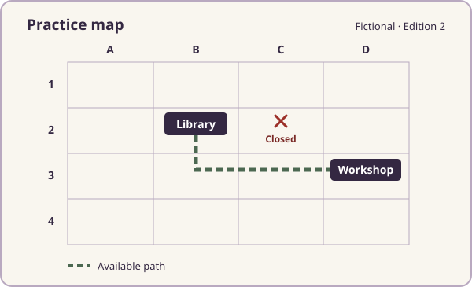

1. Choose a useful skill
Pick a real family or community task such as finding an offline map, checking a battery backup, making a repair inventory, or taking over a routine safely. Name what the learner will do, the conditions for success, and the help they can ask for.
2. Turn experience into a lesson
Ask the person who does the work to demonstrate it. Capture a short original diagram or photo where permission allows. Write the steps, parts, ordinary failure points, safe stop conditions, and how to check the result. Give a source and date for technical claims.
VIO’s practical systems guide · Learning resources and optional labs
3. Practice together and test the handoff


- Give the learner the printed map. Ask for the library’s grid location.
- Turn off connectivity on the practice device. Ask the learner to open the saved map and locate the workshop.
- Ask which map edition they used.
- Tell the learner that the crossing at C2 is closed. Ask them to teach the marked route back to you.
Observer key. B2, D3, edition 2, and B2 → B3 → C3 → D3. Give one point for each independent answer and record where a prompt was needed. At 3 out of 4, repeat the missed step. Pass when all four are completed independently.
4. Keep a printed and an offline copy
Publish a portable file with its illustrations, a short topic index, and any required reference files. Ensure readers can find the lesson without the internet. A practice run with reused paper and equipment can have $0 in new consumables. Record time spent preparing and supporting the learner.
Kiwix Reader · Kolibri learning platform · Reported search difficulty to test against
5. Review, repair, and share what works
Keep a date, owner, source version, and last successful offline test. Update the lesson when tools or conditions change, then ask a new reader to try it. Share the guide and the improvements cleared for public use. Keep each learner’s records private and make room for projects, teaching others, and rest.
Score the map lesson
| Check | Independent, prompted, or missed |
|---|---|
| Locate the library on paper | |
| Locate the workshop in the saved file | |
| Name the map edition | |
| Teach back the path around the closed crossing |